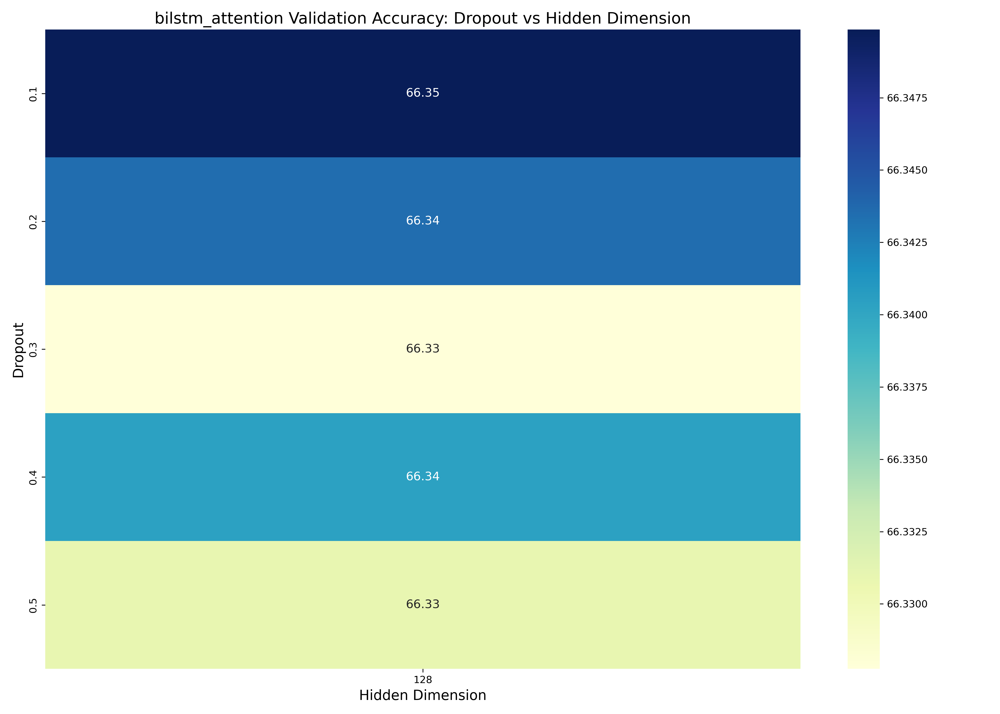
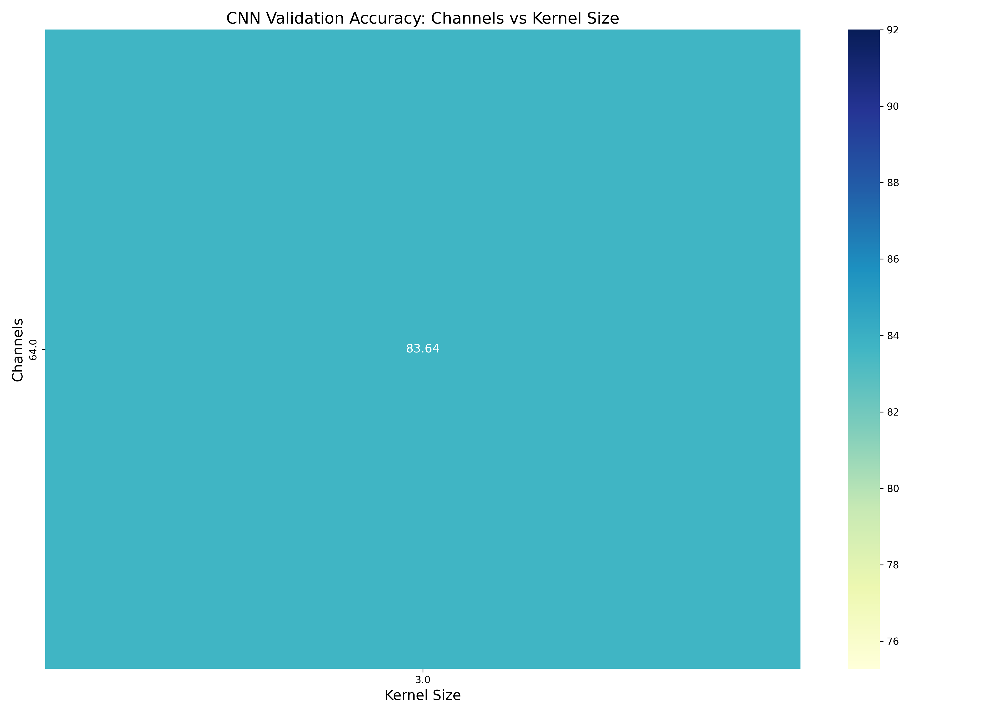
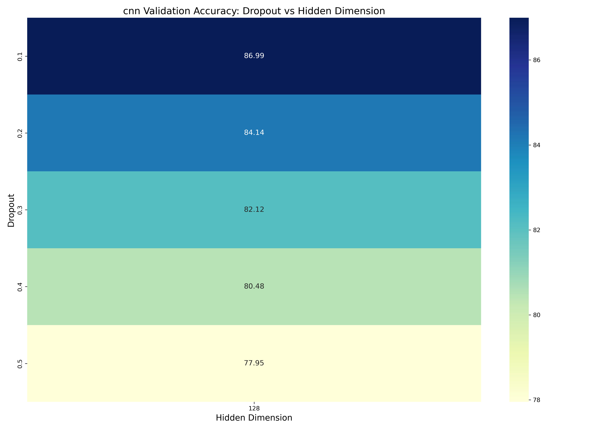
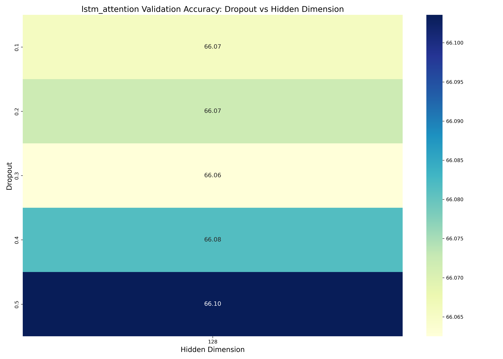
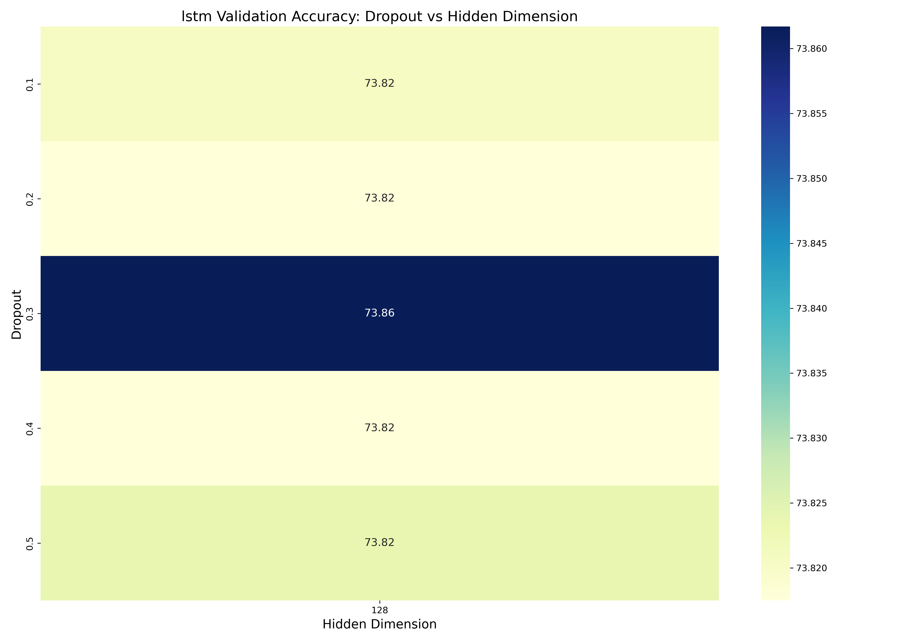
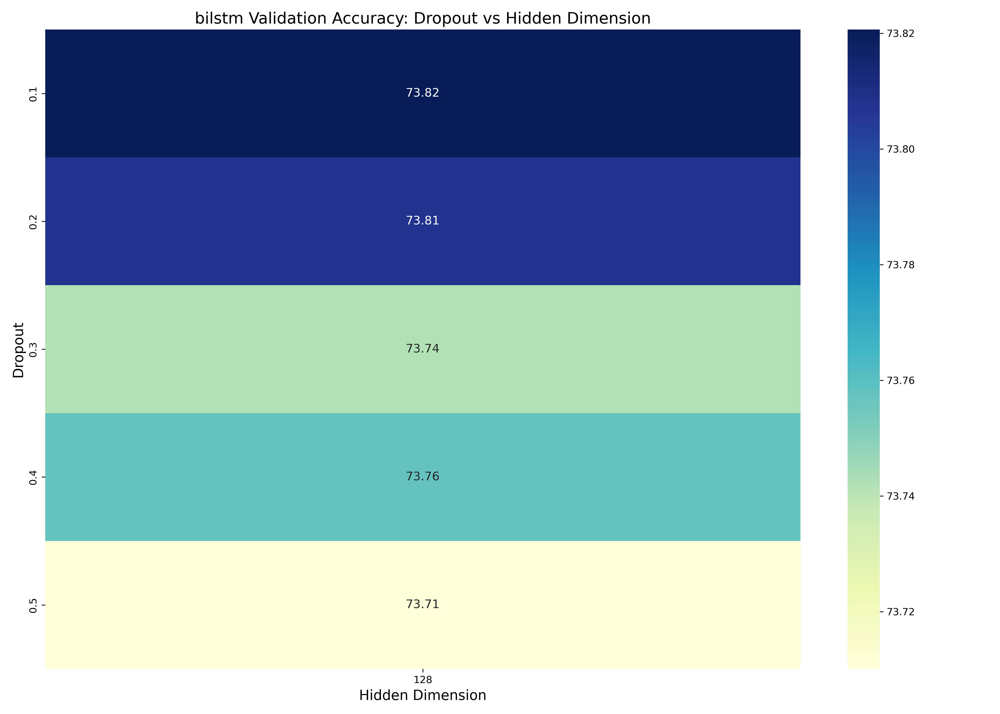

参数影响分析
bilstm_attention dropout vs hd
cnn ch vs k
bilstm_attention dropout vs wd

cnn dropout vs hd
cnn dropout vs wd

lstm_attention dropout vs wd

lstm_attention dropout vs hd
lstm dropout vs hd
bilstm dropout vs hd
lstm dropout vs wd

bilstm dropout vs wd

结论与建议
根据性能对比分析，我们得出以下结论：
- 最佳性能模型是 lstm，验证准确率达到 90.07%
- 模型性能排名（按验证准确率）：lstm (90.07%), bilstm (89.90%), lstm_attention (89.60%), bilstm_attention (89.44%), cnn (88.84%)
- 对于 lstm 模型，最佳超参数配置为：dropout=0.30, weight_decay=0.000010